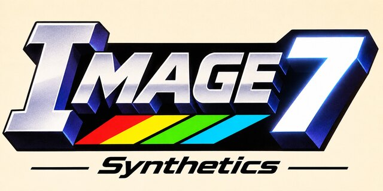

Image 7 Synthetics presents
FINALE
| Enter your Finale code, or a level code (menu) | 1, then six letters |
| 50 or 25 frames a second (menu) | 2 |
| Swim up, down, left, right | Q A O P or 7 6 5 8 |
| Fire a torpedo | Space or 0 |
| From level 3: hold fire to charge the Lance laser, let go to shoot | Space or 0, held |
| Set off the special bomb you carry | B |
| Back to the menu | Ctrl + P |
| Change speed while playing | Ctrl + F |
Finale is played on from Trigon: finish Trigon, and its last screen gives you the code that lets you in. Carry the bomb through Trigon's waters, past its divers, and drop it into the power generator of Trigon City. Ctrl is the Spectrum's Symbol Shift. Shoot divers, bombs and missiles for points; touching anything, or a diver's shot, costs a life. Runs in JSSpeccy 3 (GPL-3.0, licence). For a real Spectrum or another emulator: finale.tap.